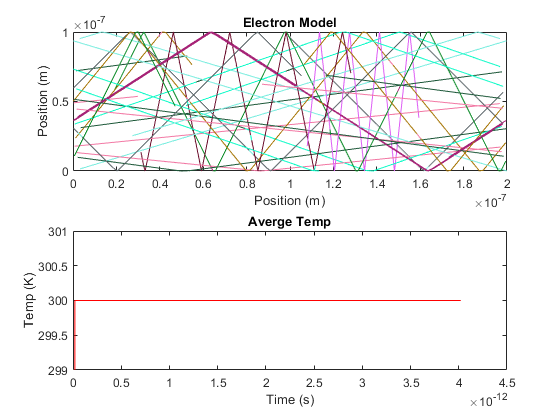

Assigment 1 - Question 1
Basic Electron Modelling Jinseng Vanderkloot 101031534
Contents
Initialization of individual electron values
clc clear all close all m0 = 9.10938215e-31; % electron mass mn = 0.26*m0; % Effective mass Temp = 300; % Inital Temp (K) kb = 1.3806504e-23; % Boltzmann constant tmn = 0.2e-12; % Mean time between collision
Question 1 vth and MFP
%Thermal Velocity (Question 1.A) vt=sqrt((2*kb*Temp)/mn); % Sim in 2D so (2*kb*Temp), 3D is (3*kb*Temp) fprintf("Thermal Velocity = %d m/s \n", vt); % Mean free path (Velocity * minimum time between collision) (Question 1.B) meanFreePath = vt * tmn; fprintf("Mean free path = %d \n", meanFreePath);
Thermal Velocity = 1.870193e+05 m/s Mean free path = 3.740385e-08
Electrons position and velocity arrays
% Plotting Area wArea = 200e-9; lArea = 100e-9; numElec = 1000; %Number of simulated Electrons numEPlot = 10; %Number of plotted Electrons dt = (lArea*wArea); %Typically 1/100 of region size stepsTot = 200; %Total amount of steps (1000 was a long simulation) tTot= stepsTot*dt; %Total Simulation time x = zeros(1,numElec); %Inital X matrix y = zeros(1,numElec); %Inital y matrix vx = zeros(1,numElec); %Inital velocity x matrix vy = zeros(1,numElec); %Inital velocity y matrix vtot = zeros(1,numElec); %Inital velocity matrix colors = rand(numElec,3); %Color assignment for each electron
Electron Random Assignments
for cnt = 1:numElec x(cnt)=rand()*wArea; y(cnt)=rand()*lArea; angle = (2*pi*rand()); vx(cnt)=sqrt(vt^2)*cos(angle); % velocity * random direction vy(cnt)=sqrt(vt^2)*sin(angle); % velocity * random direction vtot(cnt)= sqrt (vx(cnt)^2)+(vy(cnt)^2); end
Main Loop
t=0; intCNT = 2; while t < tTot t = t + dt; %Store old position oldx = x; oldy = y; %Update to new position x(1:numElec) = x(1:numElec) + (vx(1:numElec).*dt); y(1:numElec) = y(1:numElec) + (vy(1:numElec).*dt); vtot(1:numElec)= sqrt ((vx(1:numElec).^2)+(vy(1:numElec).^2)); %Apply boundary conditions for check = 1:numElec %If bottom contact, bounce off in opposite direction if (y(check)<=0) y(check) = 0; vy(check) = -vy(check); end %If top contact, bounce off in opposite directio if (y(check)>=lArea) y(check) = lArea; vy(check) = -vy(check); end %if left side of box, come out right side if(x(check)<=0) x(check) = x(check) + wArea; end %if right side of box, come out left side if(x(check)>=wArea) x(check) = x(check) - wArea; end end %Plot Boundary and map some electrons for Eplot = 1:numEPlot subplot (2,1,1) %if the electron went out of sides and back on other side, do not %draw line if abs(oldx(Eplot)-x(Eplot))<(wArea/2) p = plot([oldx(Eplot),x(Eplot)],[oldy(Eplot),y(Eplot)]); end p.Color=colors(Eplot,:); axis([0,wArea,0,lArea]); title('Electron Model'), xlabel('Position (m)', 'FontSize', 10), ylabel('Position (m)', 'FontSize', 10); hold on; end pause(0.01); %Plot Averge Temprature in the system subplot (2,1,2) Time(:,intCNT) = t; allT = ((vtot(:).^2).*mn)./(2*kb); eTemp(:,intCNT) = mean(allT); plot(Time,eTemp,"r"); title('Averge Temp'),xlabel('Time (s)', 'FontSize', 10), ylabel('Temp (K)', 'FontSize', 10), ylim([299,301]); hold on; intCNT = intCNT +1; end